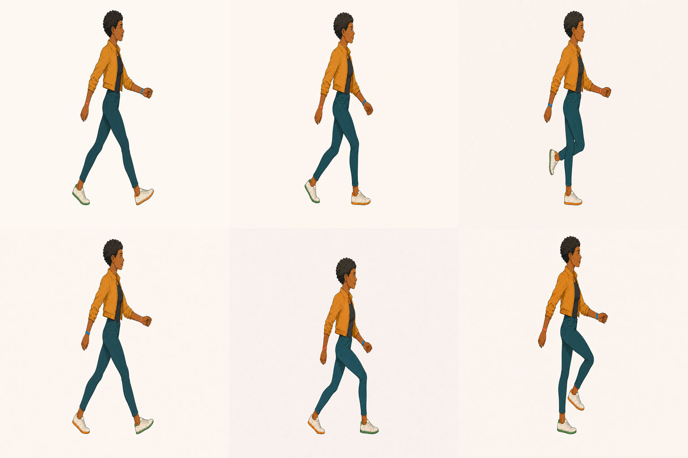
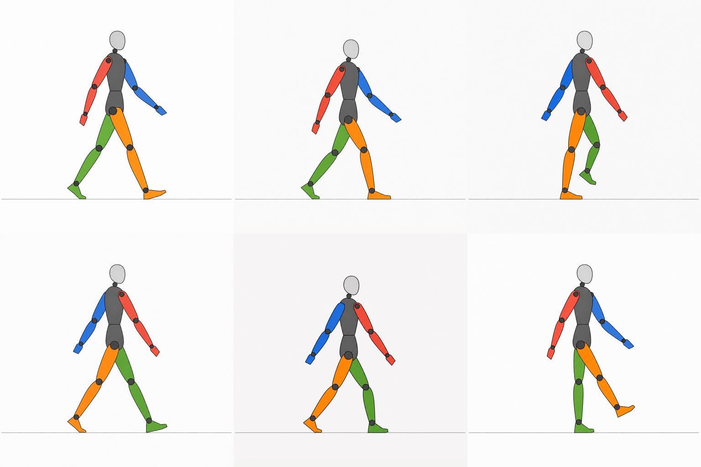
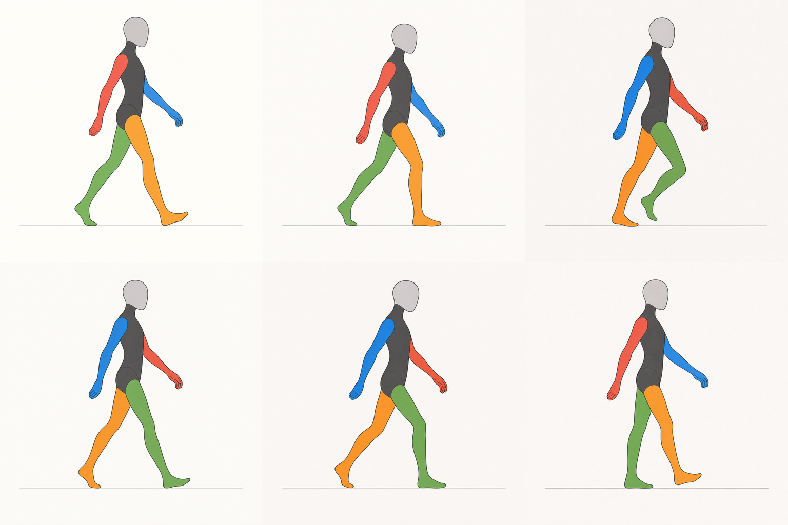
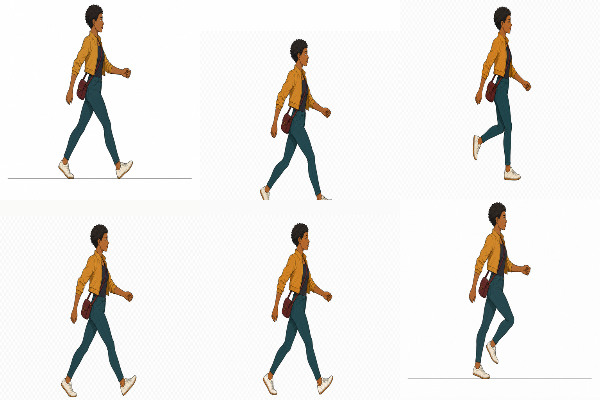

Six focused Codex skills · One accountable pipeline
Game art needs a trail of evidence.
Generate with visual models. Extract and register with deterministic tools. Review motion, alpha, provenance, and delivery contracts before an asset reaches the game.
01 / Contract
A proof bench, not a prompt gallery.
- GenerateProvider-native alpha first
- ProcessExtract, register, and compose
- InspectMotion, identity, and transparency
- DeliverAtlases, manifests, previews, and provenance
02 / Evidence
Review sheets from the real pipeline.
These frames stay useful because they reveal decisions and defects. They are not decorative mockups.




03 / Suite
Choose the narrowest skill that owns the delivery.
spritesheet-expertAnimated characters and atlas QAbuild-static-game-assetsProps, icons, and isolated assetsbuild-game-backgroundsFull-bleed scenes and layered spacesbuild-game-ui-kitsRaster interface states and kitscompose-asset-mockupsTruthful presentation and review boardsproduce-2d-assetsCoherent multi-family deliveries